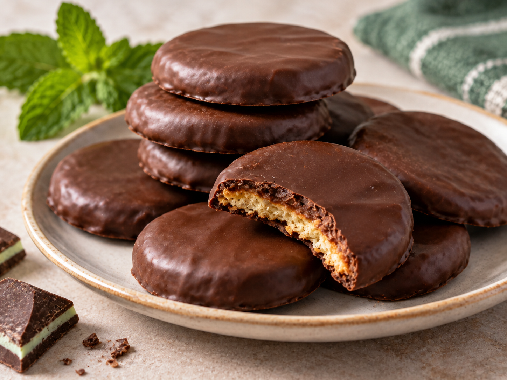

Thin Mints

Satisfying, crunchy Thin Mints-inspired cookies are ready in under 30 minutes with just two ingredients—buttery Ritz crackers and Andes mints. You’ll be surprised at how easy they are to make, and “1000% worth making, Scout’s honor.”
Ingredients
- 2 (4.7 ounce) packages chocolate mints, such as Andes®
- 2 dozen buttery round crackers, such as Ritz® crackers
Steps
- Place chocolate mints in a microwave-safe bowl and microwave for 1 to 1 1/2 minutes, stirring every 25 to 30 seconds until melted and smooth.
- Dip each cracker in melted chocolate and remove with a fork. Allow any excess chocolate dip back into the bowl; place dipped crackers on waxed paper or parchment paper.
- Refrigerate 5 minutes to set or allow to sit at room temperature until chocolate is hardened, about 15 minutes.
Home